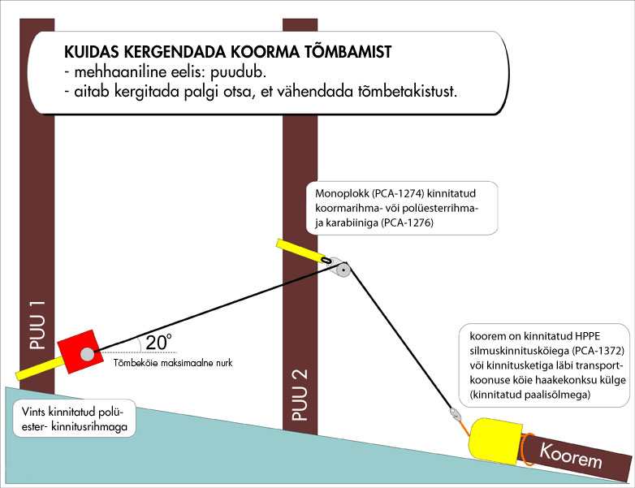
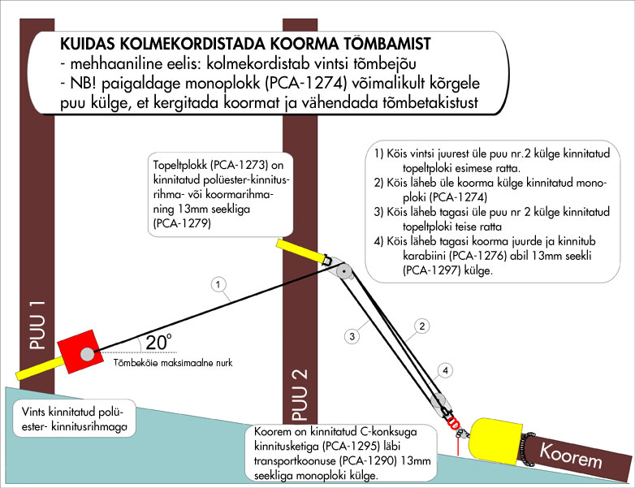
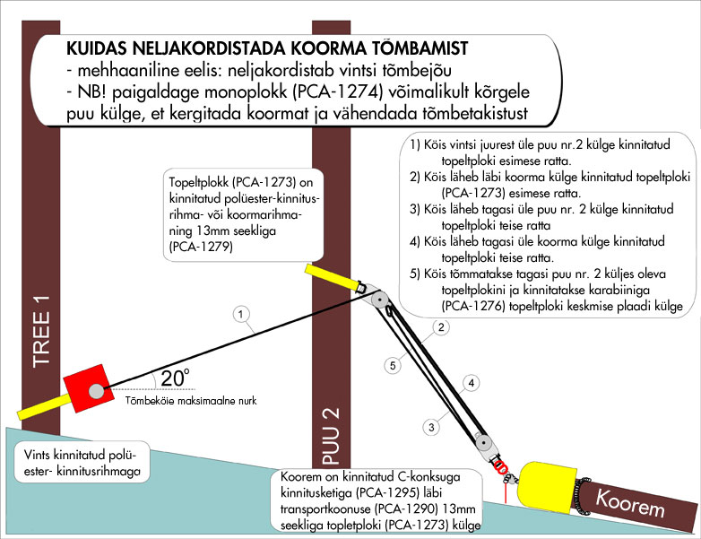
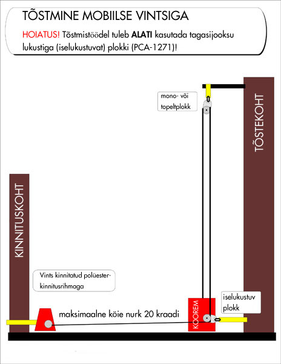
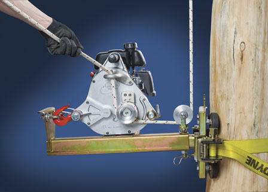

Et kergendada palgi (või muu) tõmbamist, soovitame kasutada monoplokki (PCA-1274). Kinnitatuna võimalikult kõrgele puu külge vintsi lähedusse, aitab see tõsta korma otsa, vähendadades hõõrdumist. Seda võtet saab vajadusel kasutada ka tõmbe suuna muutmiseks.
Vints annab 1136 kg tõmbejõudu otse, ilma plokita. Kasutades monoplokki saate te tõmbejõu kahekordistada.
Pildil on kahekordse tõmbejõu kasutamise näide kasutades kahte monoplokki PCA-1274. Üks kinnitage koorma külge, teine tõmbejõu suunamiseks ja hõõrdetakistuse vähendamiseks puu külge.
Saavutamaks kolmekordset tõmbejõudu (3408 kg), kasutage monoplokki (PCA-1274) ja ühte topeltplokki (PCA-1273).Topeltplokk paigaldage võimalikult kõrgele puu külge.
Neljakordse tõmbejõu (4544 kg) saavutamiseks tuleb teil kasutada kahte topeltplokki. Üht kinnitatuna koorma külge ja teist vintsi lähedusse, võimalikult kõrgele puu külge.

Seda valemit kasutatakse arvutamaks koormale rakendatavat jõudu olenevalt tõmbeköie nurgast vintsi ja koorma suhtes. Te märkate olulist erinevust olenevalt nurga suurusest.
AF – koormale rakendatav jõud
WF – vintsi tõmbejõud
Cos – nurga koosinus
Pidage meeles, et see vints ei ole ette nähtud inimeste tõstmiseks. Kui soovite vintsi kasutada koorma tõstmiseks, kasutage kindlasti lukustiga plokke (PCA-1271, PCA-1272)
Tõstmistöödeks mobiilse vintsiga soovitame kasutada puu/posti kinnitusplaati (PCA-1263), tõstekinnitust (PCA-1264). Sellises komplektsuses sobib mobiilne vints suurepŠraselt nt. elektrikaablite paigaldustöödeks.
Copyright © 2016 Portable Winch Co
{kind=link}
{kind=link}
{kind=link}
{kind=link}
{kind=link}
{kind=link}
{kind=link}